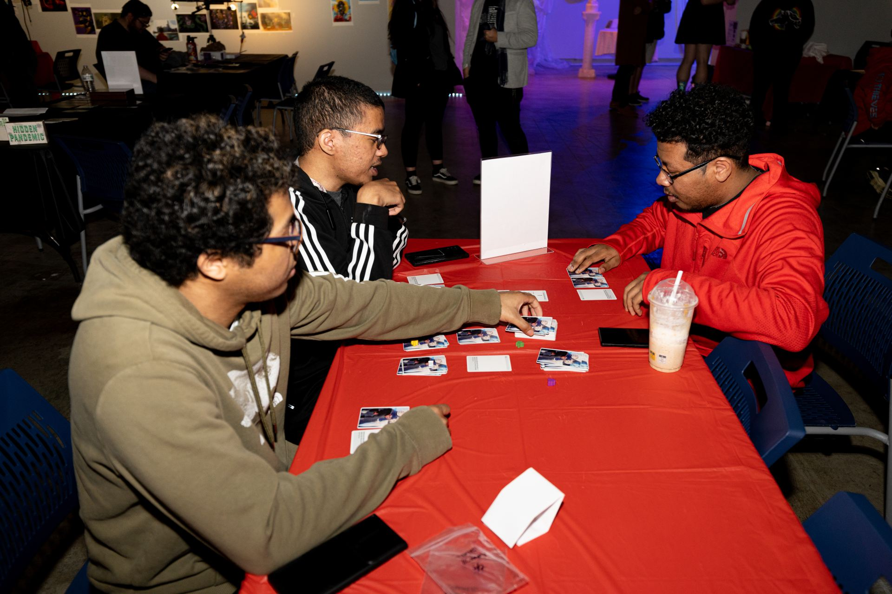

<!DOCTYPE html>
<html lang="en"></html>
<head>
  
    <meta charset="UTF-8">
    <title>School of CTK Overview</title>
    <link href="stylea4.css" rel="stylesheet" type="text/css">
  </head>
<body>
  
  <header>
    <div class="redbg">
<h1>School of CTK Overview</h1>

</div>
</header>

<div class="blackbg">
<nav>
<h3>Navigation</h3>
    <ul>
  <li><a href="assignment4.html">Main Page</a></li>
  <li><a href="requirementsa4.html">Retention Requirements and Sequences</a></li>
  <li><a href="classesa4.html">CTK Class List</a></li>
</ul>
</nav>

<main>
<p><b>Adress:</b> Campus Box 5750
<br><b>Phone:</b> (309) 438-2875
<br><b>Director:</b> Colby Jennings
<br><b>Degrees Offered:</b> B.A., B.S.</p>

<h2>Major in Creative Technologies</h2>

<p class="centerpg">The interdisciplinary Creative Technologies major emphasizes design and practice in the integration of digital technologies and the fine arts. In addition to foundational study across the fine arts, the major provides training and experiences across a range of creative/technical fields including video, sound, electronic music, music production, gaming, motion graphics, interactivity, AR/VR, UI/UX, mobile, web, and computer programming concepts.</p>
</div>
</main>

<body>
</html>